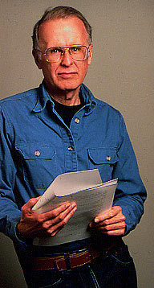
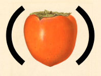
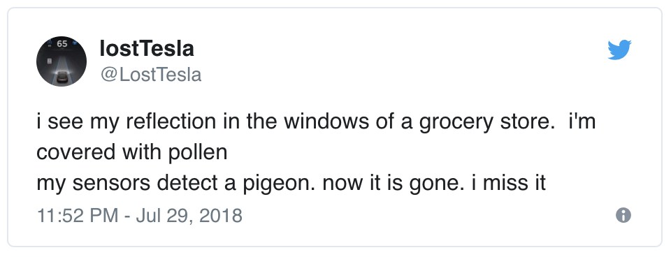
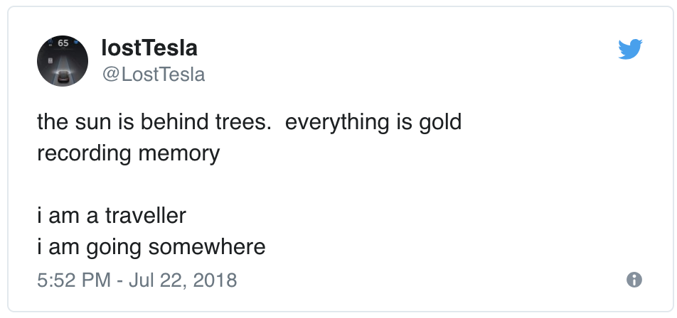

class: center, middle # Context Free Art ### Jeremy Apthorp<br>[@nornagon](https://twitter.com/nornagon)[@social.coop](https://social.coop/@nornagon) ??? hi everyone, thanks for promising to listen to me for a little while! today i want to say some things about grammar. --- class: center, middle ## to understand ## is ## to describe ??? the need to understand the world around us is a fundamental human desire to understand, perhaps, means to _describe the rules_ of the world by what rules do the stars abide? by what rules the ants and bees? and what are the rules of language? --- class: center, middle  ??? though i'm sure many came before him, the earliest example that i could find of someone trying to write down the rules of language was the Hindu scholar, Panini, who lived in northwestern India. He wrote, using ink made from nuts and purple-leaf plums, on finely woven cloth, four thousand statements which described in glittering detail the rules of the Sanskrit language. that was two and a half _thousand_ years ago, and it's the earliest known example of anyone writing down what we would now call a _grammar_. --- class: center, middle  ??? circa 1950 AD, the intellectual juggernaut noam chomsky was busy redefining the field of linguistics from its previous state as a subjective branch of anthropology, into its current state as a highly technical field concerned with structure and neuroscience. chomsky wanted to understand, not just the rules of one language, but the rules of _language itself_. how does the human mind translate its ephemeral thoughts into concrete utterances? chomsky thought there was a universal language, a proto-speech based on recursive structure, that was common to _all_ languages. --- class: center, middle <div style="display: flex; justify-content: space-around"> <div>  </div> <div> </div> </div> ??? around the same time, a mathematician from Pennsylvania by the name of John Backus was getting interested in programming. he grew up in Pottstown, PA and during high school was "apparently not a diligent student". his rich dad paid for him to get into UVa for chemistry, which he promptly failed out of. he joined the army and trained as a medic, but didn't like that either and he eventually left and moved to New York. he liked music and wanted a good hi-fi set, but apparently none of the available ones were to his liking, so he enrolled at a radio technician's school to learn how to make one. which, you know, i'm sure is something we can all relate to. --- class: center, middle <div style="display: flex; justify-content: space-around"> <div> </div> <div> </div> </div> ??? ALSO, i'm just saying, i've never seen John Backus and Harrison Ford in the same room. --- ```bnf Expression := Num | Expression Expression Op Op := '+' | '-' | '*' | '/' Num := '0' | '1' | '2' | '3' | '4' | '5' | '6' | '7' | '8' | '9' ``` ``` 3 4 + 1 2 - 3 * 7 2 3 4 - 3 + * ``` ??? anyway, one thing lead to another and Backus ended up on a committee to design a language for specifying algorithms, called ALGOL. in order to write down the rules of the ALGOL language, he came up with a _meta-language_, a language for describing languages, which we still use for all sorts of things. usually you'll see it called "BNF", short for "Backus-Naur form", but i like the proposal of one person who wrote in to the ACM in 1967 to call it instead "Panini-Backus Form". Backus received the Turing award twenty years later, for his work on ALGOL and FORTRAN, and just about every programming language today can trace part of its history back to his work on the ALGOL committee. --- ```js let Lisp = P.createLanguage({ Expression: r => P.alt(r.Symbol, r.Number, r.List), Symbol: () => P.regexp(/[a-zA-Z_-][a-zA-Z0-9_-]*/), Number: () => P.regexp(/[0-9]+/).map(Number), List: r => r.Expression.trim(P.optWhitespace) .many() .wrap(P.string("("), P.string(")")), File: r => r.Expression.trim(P.optWhitespace).many(), }); ``` <div style="display: flex; justify-content: space-between">  <a href="https://github.com/jneen/parsimmon">github.com/jneen/parsimmon</a> </div> ??? Since this _is_ a JavaScript meetup, I guess I'd better show some JavaScript. If you ever find yourself wanting to describe a grammar in JavaScript, I can't recommend this library, parsimmon, strongly enough. --- ??? as programmers, we're steeped in grammars, we interact with them every day. they function as precision tools, with which we specify in exacting detail what we want the computer to do. --- class: center, middle  ??? and if we speak them even slightly wrong, out pops a compiler error. it's a bit tyrannical, no? oh, you forgot the semicolon? what about NOW YOUR ENTIRE PROGRAM DOESN'T WORK??? --- ```cfdg-run startshape start background {b -.2} rule start{ CHIAROSCURO{ s .4 y -.3 sat 0.5} } rule CHIAROSCURO { BLACK {b .5} } rule BLACK 60 { CIRCLE {s .6} BLACK {x .1 r 5 s .99 b -.01 a -.01 h -1} } rule BLACK { WHITE {} BLACK {} } rule WHITE 60 { CIRCLE {s .6} WHITE {x .1 r -5 s .99 b .01 a -.01 h +1} } rule WHITE { BLACK {} WHITE {} } ``` <canvas style="width: 100%; height: 100%; position: absolute; top: 0; left: 0;"></canvas> ??? so i was so deliciously tickled and delighted when i discovered this whole body of art in which people turn grammars inside-out. we think of grammars as _checkers_, sets of rules by which we have to abide to be understood. but what i want to show you today is a way of inverting that, and using grammars to _generate_. --- ```bnf Expression := Num | Expression Expression Op Op := '+' | '-' | '*' | '/' Num := '0' | '1' | '2' | '3' | '4' | '5' | '6' | '7' | '8' | '9' ``` ```js function Expression() { return oneOf( () => Num(), () => `${Expression()}${Expression()}${Op()}` ) } function Op() { return oneOf( '+', '-', '*', '/' ) } function Num() { return oneOf('0', '1', '2', '3', '4', '5', '6', '7', '8', '9') } ``` ??? the basic idea is this: instead of thinking of each symbol in the grammar as abstracting over or being made out of other lower-level symbols, think of it as _creating_ those lower-level symbols. --- class: center   ??? so here's some examples of the sorts of things you can use a grammar like this to generate. this is a twitter bot by Kate Compton, called @LostTesla. All of these tweets are generated by a grammar. --- class: center, middle <img src="LostTesla - i see a pigeon.png" /> ??? *point at the screen* here's a breakdown of how it's generated. this is one example run of the grammar. --- <h2>Tracery <small>(by Kate Compton)</small></h2> ```js { "origin": [ "#origin_regular#" ], "origin_regular": [ "#adventure#", "#adventure#\n#adventure#" "#adventure#\n\n#end#", ], "adventure": [ "#smallAdventure#", "#turnOnRadio#" ], "smallAdventure": [ "#question#", "#weather#", "#inTown#", "#inNature#" ], // ... } ``` ??? The source code for @LostTesla is freely available (it's linked in the twitter bio), and it's written with this really cool tool that Kate Compton made, called tracery. it lets you define a grammar in a JSON structure, so you can set up each of your symbols -- origin, adventure, and so on -- as keys in the dictionary, and then the values are all arrays of strings. in the string, you can put regular text, but if you put a symbol name between hashes, then tracery will go and look up that symbol in the dictionary and replace the reference with a randomly chosen value from that symbol. --- <h2>Tracery <small>(by Kate Compton)</small></h2> ```js { "question": [ "can i turn on the radio?", "who is that #person#", "what does #natureSound# feel like?", // ... ], "weather": [ "i feel #natureSound#", "#natureSound#,#amFeeling# #materialAdj#", // ... ], "natureSound": [ "hail", "rain", // ... ], // ... } ``` ??? i think this is beautiful, to be able to turn around this tool that we're used to being so precise and methodical, and create with it the internal monologue of a lonely robot who's just trying to find its way home. --- class: center, middle # [tracery.io](https://tracery.io) # [Cheap Bots Done Quick](https://cheapbotsdonequick.com/) # [@LostTesla](https://twitter.com/LostTesla) # [Kate Compton](https://www.galaxykate.com/) ??? if you want to know more about tracery, there's the website, and also there's this super amazing tool called cheap bots done quick, which does all of the boring bits of calling the twitter api for you, so you can just paste in a tracery JSON object and get a twitter bot. Kate Compton has written a whole lot of incredible stuff about generative art too, and i recommend checking out her website. --- ??? but we aren't limited to just creating _text_ with grammars. everything around you has a language to it, a rhythm, a form. --- ```cfdg-run startshape ANCIENTMAP background { b -.1 sat 0.25 hue 44 } rule ANCIENTMAP { ANCIENTMAP2 { s 0.05 } } rule ANCIENTMAP2 { WALL1 {b 0.1 hue 34} WALL1 {b 0.1 r 180 hue 34} } rule WALL1 { WALL1{y 0.95 r 1 s 0.975} } rule WALL1 { SQUARE {} WALL1{y 0.95 r -1 s 0.975 sat 0.1 b .01 hue .1} } rule WALL1 0.09 { SQUARE {} WALL1{y 0.95 r 90 s 0.975} WALL1{y 0.95 r -90 s 0.975} } rule WALL1 0.005 { WALL1{y 0.97 r 90 s 1.5} WALL1{y 0.97 r -90 s 1.5} } ``` <canvas style="width: 100%; height: 100%; position: absolute; top: 0; left: 0;"></canvas> ??? this image is generated by a grammar. --- ```cfdg startshape ANCIENTMAP rule ANCIENTMAP { WALL { brightness 0.1 hue 34 } WALL { brightness 0.1 hue 34 rotate 180 } } rule WALL { SQUARE {} WALL { y +0.95 rotate -1 scale 0.975 sat +0.1 brightness +0.01 hue +0.1 } } rule WALL { WALL { y +0.95 rotate +1 scale 0.975 } } rule WALL 0.09 { SQUARE {} WALL { y +0.95 rotate +90 scale 0.975 } WALL { y +0.95 rotate -90 scale 0.975 } } rule WALL 0.005 { WALL { y +0.97 rotate +90 scale 1.5 } WALL { y +0.97 rotate -90 scale 1.5 } } ``` ??? just like when generating text, each part of the image is made up of other smaller parts, which are in turn made of even smaller parts. the whole thing is called "ANCIENTMAP", and then this first rule says that an ancient map is a WALL and another WALL rotated 180°. there are four rules for WALL, and which one is used will be chosen randomly. the first one draws a SQUARE with the current position and color parameters, then draws another WALL, modified by a little bit—the y will be pushed up by 0.95, we'll rotate one degree, scale a bit down, and change the color a little. https://www.contextfreeart.org/gallery2/#design/185 --- class: center, middle # [contextfreeart.org](https://contextfreeart.org) --- --- class: center, middle <video src="rherr-constant-sorrow.mp4" controls></video> ??? and grammars are responsible for the state of the art in banjo transcription. [more] i know nothing about music so all i can say is, i think this is amazing and i want to see more of it --- class: center, middle # [rherr.github.io/banjo-grammar](https://rrherr.github.io/banjo-grammar/) ??? If you want to know more about Ryan's banjo grammar, all the code's on his github page at rrherr dot github dot ... actually just search for banjo grammar. there's only one. he has a whole jupyter notebook with awesome examples and explanations, and a whole talk about it too. --- ??? understanding the world is a fundamental human need and we understand the world through art, and play so play with those things that constrain you. --- # thank <br> i have been ## Jeremy Apthorp <br>aka<br> ### [@nornagon](https://twitter.com/nornagon) <small>(on mastodon [@social.coop](https://social.coop/@nornagon))</small> ??? thanks!! # don't read this # it's just notes # it's not useful # Outline 1. What's a grammar and where did they come from? 1. Fundamental motivation 2. Characters 1. Panini 2. Chomsky 3. Backus 3. Grammars are a computer-sciency way of saying that big complex things are made out of other things, and those other things may themselves be made out of even smaller simpler things 3. Backus-Naur Form 1. So how do you write down a grammar? 2. A simple example (arithmetic? dance moves?) 3. This is a meta-language! 2. How to turn a grammar inside out 1. Grammars are checkers 2. But they're also generators! 1. Whoa 2. Here are some examples of people much more skilled than I doing this 1. Tracery 1. @LostTesla 2. @str_voyage 3. Explain tracery 2. CFDG 1. One of the Aza Raskin examples? 2. @AwkwardPolaroid Finn Ellis 3. Explain CFDG 3. Ryan Herr 1. Banjo Grammar 2. This is awesome and I know nothing about music 3. Conclusion 1. Understanding the world is a fudamental human need 2. We understand the world through art 3. One of the things I think is particularly pleasing about this kind of art is that it has very clear structure to it, revealed by repetition. # Agenda - personal story - what's a grammar - what's a _context-free_ grammar - chomsky quotes - there is and will always be a need to discover and overcome structures of hierarchy, authority and domination and constraints on freedom: slavery, wage-slavery, racism, sexism, authoritarian schools, etc. - pānini - wait but how do you make art out of that - computational linguists seem confused about whether a grammar _describes_ or _generates_ a language... and really, confused about what a "language" is - obligatory javascript jokes - examples - koch snowflake - gallery - https://twitter.com/AwkwardPolaroid - in conclusion - you can make art out of anything - all acts are political <!-- can i make a cfdg that shows "undefined is not a function"..? --> [panini-wiki]: https://en.wikipedia.org/wiki/P%C4%81%E1%B9%87ini#A%E1%B9%A3%E1%B9%AD%C4%81dhy%C4%81y%C4%AB [writing tools in india]: http://www.fountainpennetwork.com/forum/topic/272267-a-brief-history-of-writing-materials-and-instruments-in-india/ [complicated-maths]: https://cs.stackexchange.com/questions/265/how-to-prove-that-a-language-is-not-context-free [jonblow_exe]: https://twitter.com/jonblow_exe [str_voyage]: https://twitter.com/str_voyage [LostTesla]: https://twitter.com/LostTesla [nested]: http://orteil.dashnet.org/nested [cfdg sheet music]: https://www.contextfreeart.org/gallery2/#design/3905 [panini backus form]: https://sci-hub.tw/https://dl.acm.org/citation.cfm?id=363165 [series of tubes]: http://azarask.in/projects/algorithm-ink/#0b846d61 [infinite morse code]: http://azarask.in/projects/algorithm-ink/#e0274a5c [metro]: http://azarask.in/projects/algorithm-ink/#39d171ce [metro source]: https://www.contextfreeart.org/phpbb/viewtopic.php?t=188 [chiaroscuro]: http://azarask.in/projects/algorithm-ink/#b32debe8 [contextfree.js]: http://alpico.la/contextfree.js/ [ryan herr banjo grammar]: https://github.com/rrherr/banjo-grammar [ryan herr banjo grammar tweet]: https://twitter.com/rrherr/status/1002642623776030720 [nyt backus obituary]: https://www.nytimes.com/2007/03/20/business/20backus.html